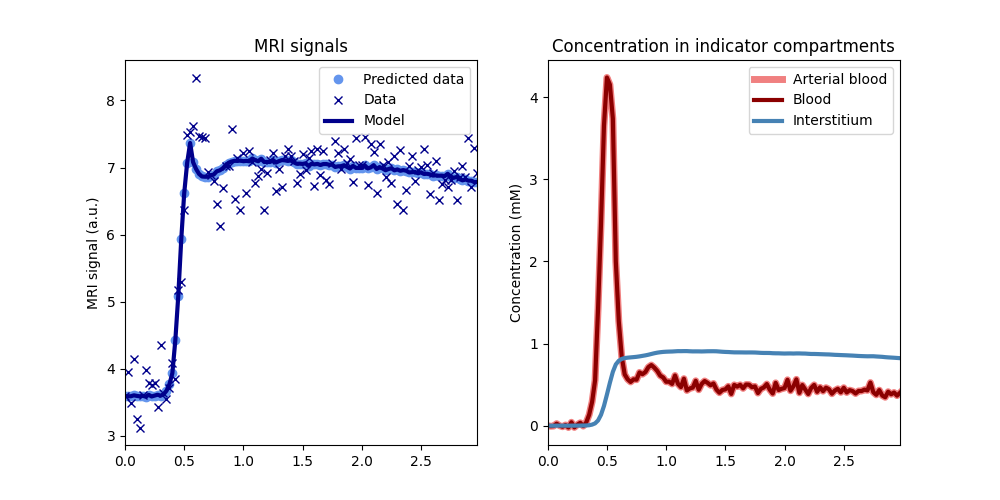
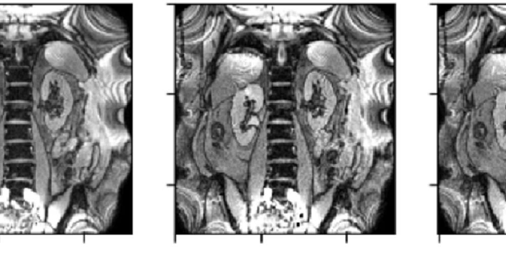
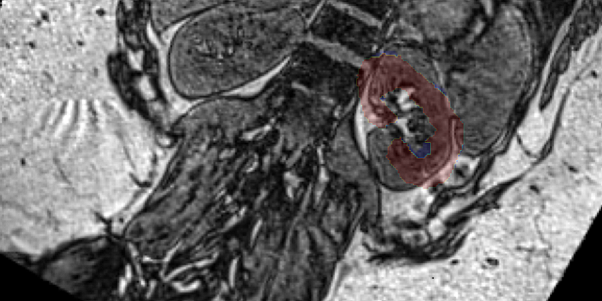
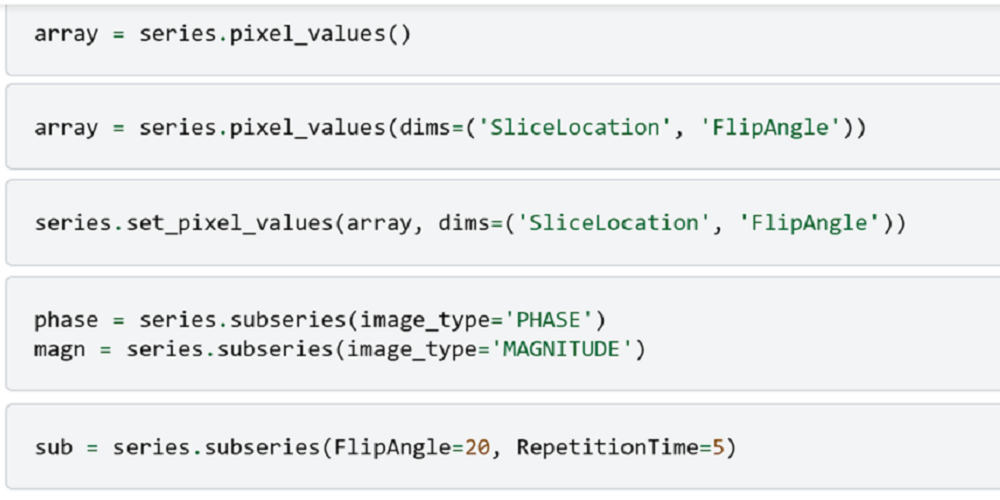
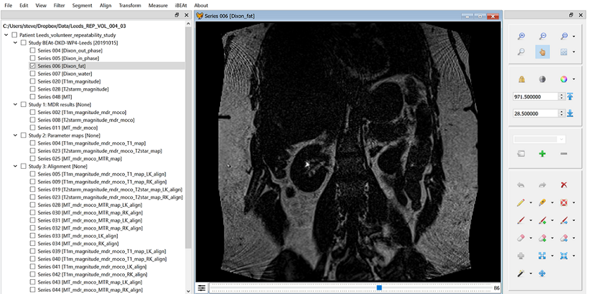

Packages#
A collection of python packages developed to fill gaps in the python ecosystem.

dcmri
Modelling and model fitting of dynamic contrast MRI data.

mdreg
Motion-correction by model-driven registration.

vreg
Volume transformations and alignment in absolute coordinates.

dbdicom
Reading from- and writing to DICOM databases

wezel
A graphical user interface for prototyping pipelines, editing of data and quality control of results.